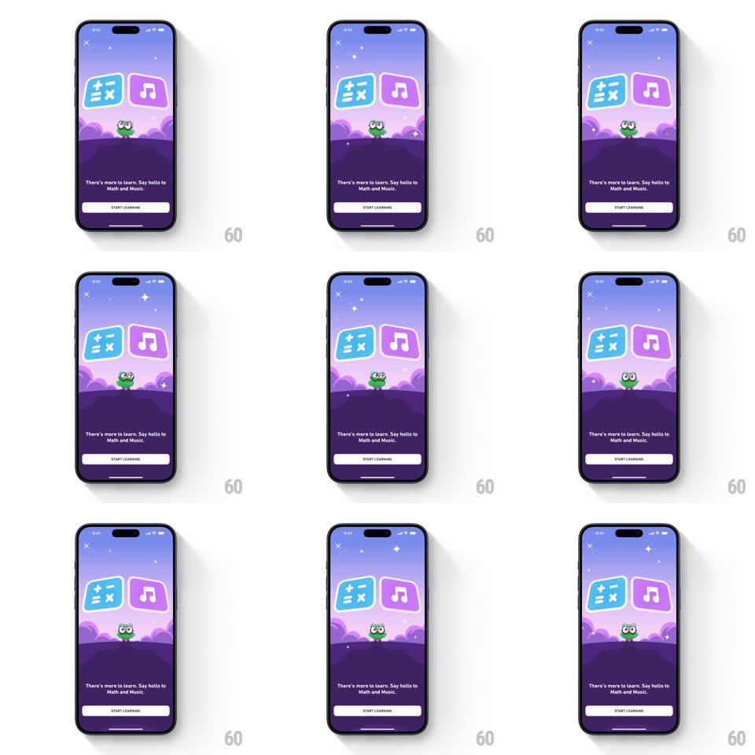

Media
Frame-by-frame

Rebuild this interaction 1:1: Duolingo's Math and Music promo splash - a purple night scene where the math and music course cards bob and tilt above the clouds, Duo blinks below them, and background stars twinkle, over "There's more to learn. Say hello to Math and Music." with a START LEARNING button.

Rebuild this interaction 1:1: Duolingo's Math and Music promo splash - a purple night scene where the math and music course cards bob and tilt above the clouds, Duo blinks below them, and background stars twinkle, over "There's more to learn. Say hello to Math and Music." with a START LEARNING button. ## Integration Integration: stack-agnostic spec - springs given as stiffness/damping, timed motions as duration + curve; map every value to your framework and animation library of choice. ## Scene Purple gradient sky over cloud layers: two rounded square cards (blue math card with operators, purple music card with a note) tilted toward each other, Duo peeking from behind the clouds, white caption text, and a white START LEARNING button. Close X top-left. ## Motion spec Pattern: looping idle diorama. - The two cards bob in opposition (translateY +/-8px, 2.4s, sine) with a slow tilt (rotate +/-4deg, same period, phase-offset). - Duo blinks every ~3s (eyes squint 120ms) and sways slightly with the clouds. - Stars twinkle at random points (opacity 0.2 -> 1 -> 0.2, ~1.5s each, randomized phases). - Cloud layers drift horizontally at two speeds (near layer ~20px/s, far ~8px/s), looping seamlessly. - Caption and button are static. ## Calibration - Everything loops with no visible seam - this is an ambient splash, not a one-shot. - The cards never touch or pass each other; the bob amplitude is small. ## Reduced motion All motion stops except a single slow fade-in of the whole scene (300ms). ## Don't miss - Duo's blink is the only facial animation - the charm beat. - The two cards' bob is phase-opposed - when one is up, the other is down.